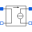
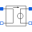
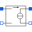

TwoPortControlledSourcesComponent with two electrical ports, including current |
|
Information
This information is part of the Modelica Standard Library maintained by the Modelica Association.
TwoPort is a partial model that consists of two ports. It is assumed that the current flowing into the positive pin is identical to the current flowing out of pin n. This currents of each port are provided explicitly as currents i1 and i2, the voltages respectively as v1 and v2.
Connectors (4)
| p1 |
Type: PositivePin Description: Positive pin of the controlling port |
|
|---|---|---|
| n1 |
Type: NegativePin Description: Negative pin of the controlling port |
|
| p2 |
Type: PositivePin Description: Positive pin of the controlled port |
|
| n2 |
Type: NegativePin Description: Negative pin of the controlled port |
Extended by (4)
|  |
Modelica.Electrical.Spice3.Basic
Linear current-controlled current source |
|  |
Modelica.Electrical.Spice3.Basic
Linear current-controlled voltage source |
|  |
Modelica.Electrical.Spice3.Basic
Linear voltage-controlled current source |
|
Modelica.Electrical.Spice3.Basic
Linear voltage-controlled voltage source |